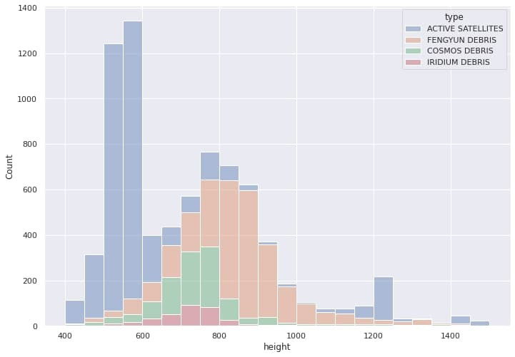
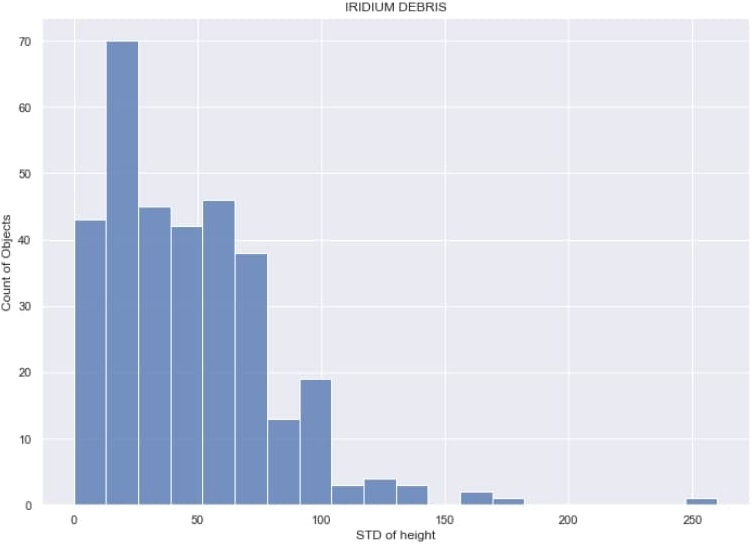
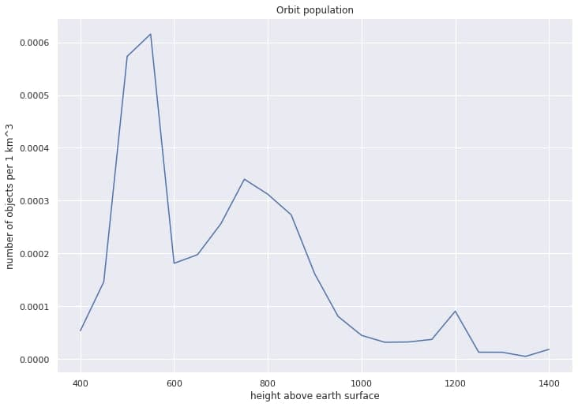
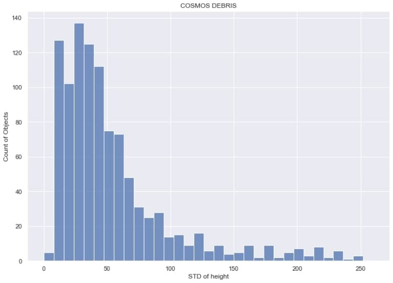

Number of objects per altitude interval (50 km step)

Standard deviation of debris altitude (Iridium 33)

Altitude density (number of objects per space volume)

Standard deviation of debris altitude (Cosmos 2251)